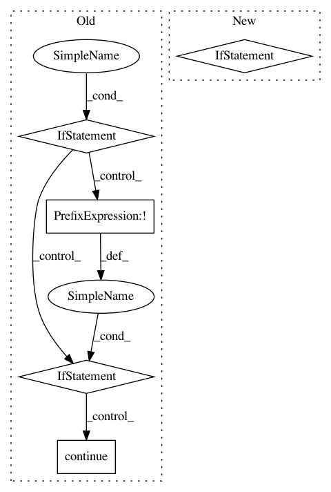

ccdc36ed8d463609a21bd76cf51ad24c9c4b9f11,deeplabcut/generate_training_dataset/frame_extraction.py,,select_cropping_area,#Any#Any#,12
Before Change
for video in videos:
clip = cv2.VideoCapture(video)
if not clip.isOpened():
print("Video could not be opened. Skipping...")
continue
success, frame = clip.read()
if not success:
print("Frame could not be read. Skipping...")
continue
coords = select_crop_parameters.show(config, frame[:, :, ::-1])
cfg["video_sets"][video] = {
"crop": ", ".join(map(str, [int(coords[0]), int(coords[1]), int(coords[2]), int(coords[3])]))}
After Change
for video in videos:
coords = auxfun_videos.draw_bbox(video)
if coords:
cfg["video_sets"][video] = {
"crop": ", ".join(map(str, [int(coords[0]), int(coords[2]), int(coords[1]), int(coords[3])]))}
auxiliaryfunctions.write_config(config, cfg)
return cfg
In pattern: SUPERPATTERN
Frequency: 3
Non-data size: 5
Instances
Project Name: AlexEMG/DeepLabCut
Commit Name: ccdc36ed8d463609a21bd76cf51ad24c9c4b9f11
Time: 2020-05-16
Author: amathis@fas.harvard.edu
File Name: deeplabcut/generate_training_dataset/frame_extraction.py
Class Name:
Method Name: select_cropping_area
Project Name: keras-team/keras
Commit Name: 24246ea53157f7e9faef74db3e4c06642a50509d
Time: 2018-01-11
Author: francois.chollet@gmail.com
File Name: keras/engine/topology.py
Class Name: Container
Method Name: state_updates
Project Name: microsoft/nni
Commit Name: 04c30254d4bd16b07958110165f59e9ac9fbf5c6
Time: 2019-07-16
Author: 38930155+chicm-ms@users.noreply.github.com
File Name: tools/nni_trial_tool/log_utils.py
Class Name: PipeLogReader
Method Name: run